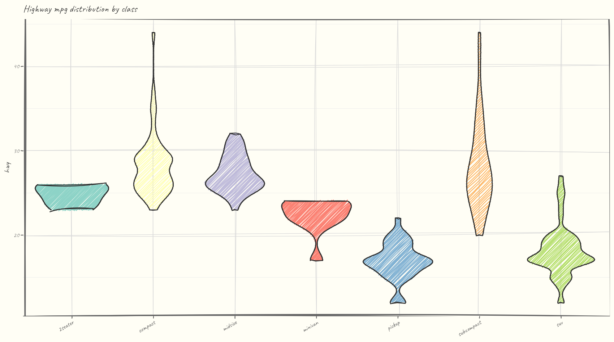
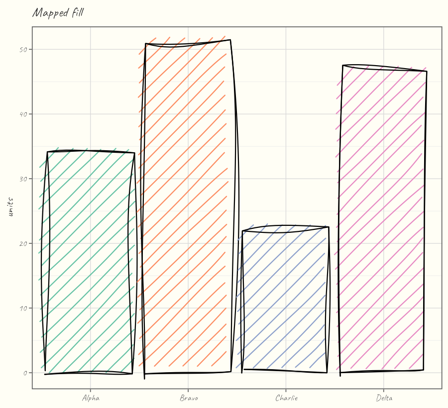
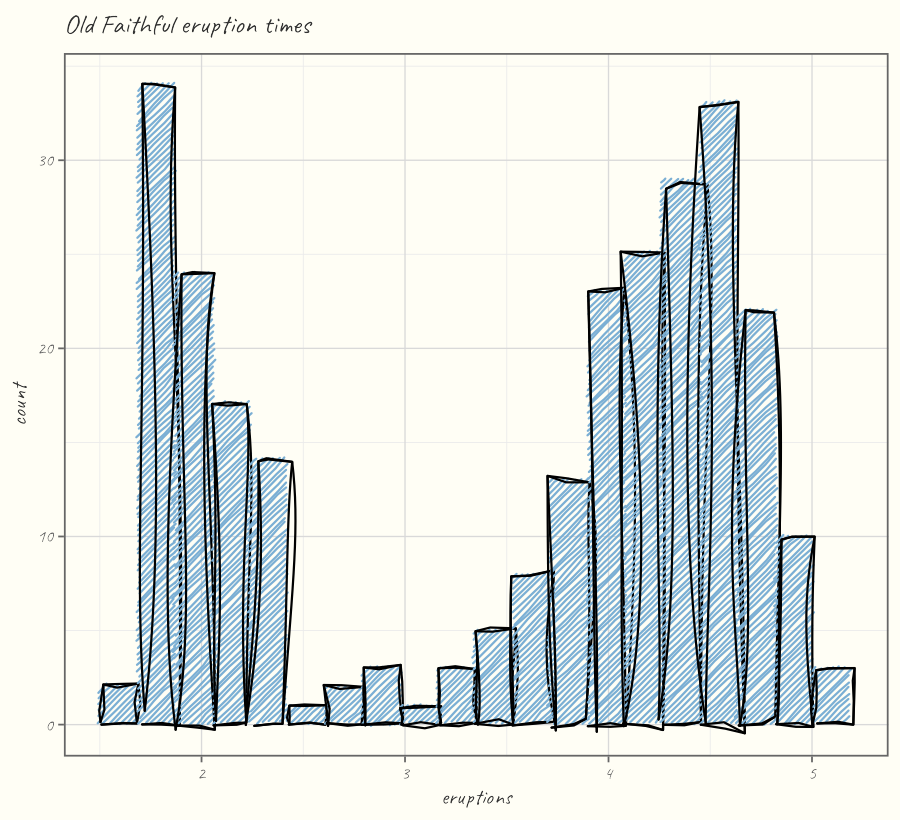
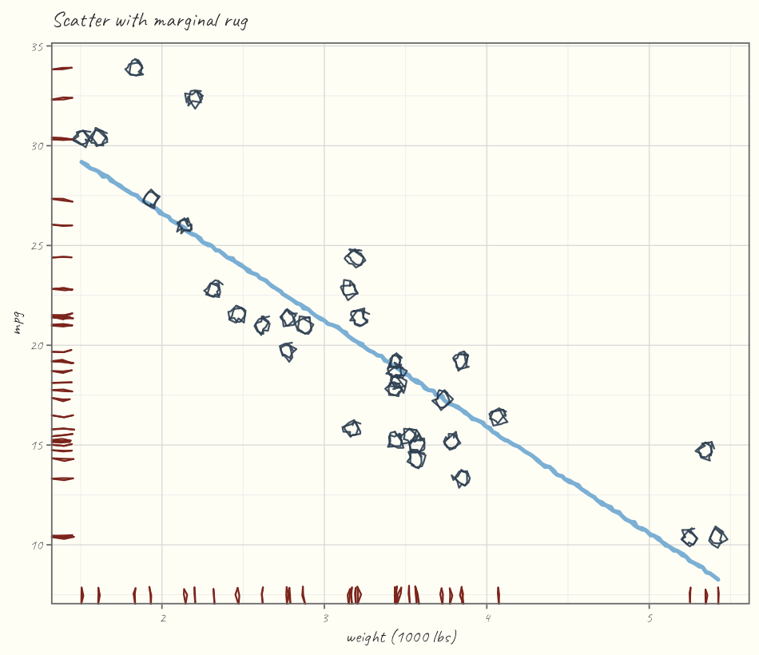
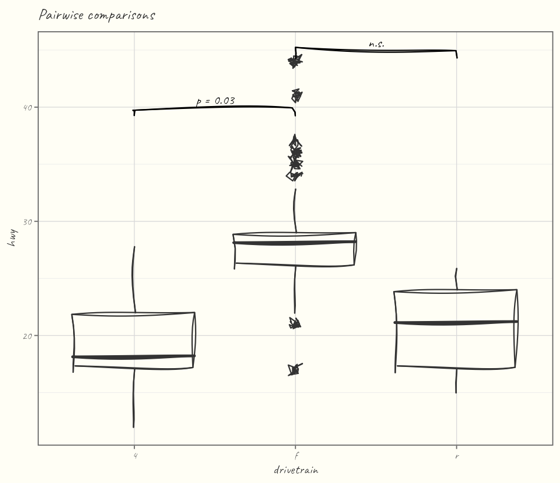
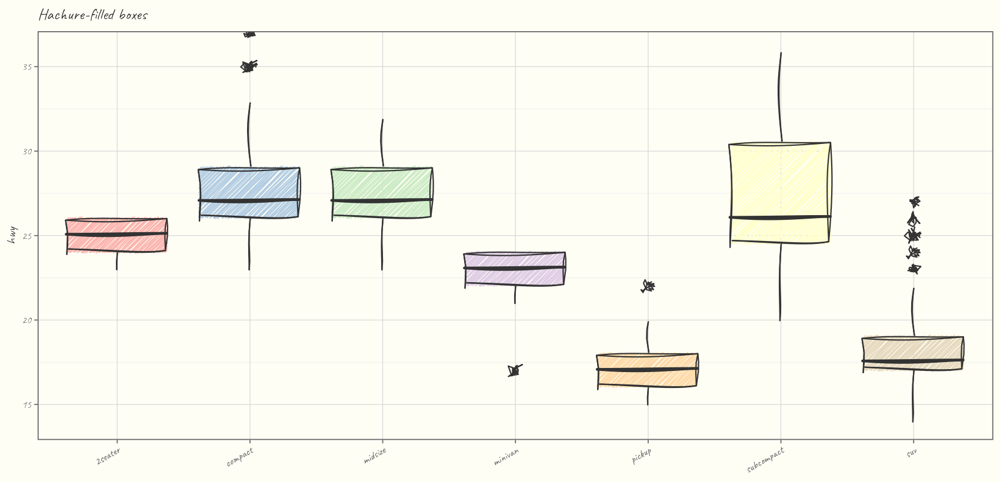
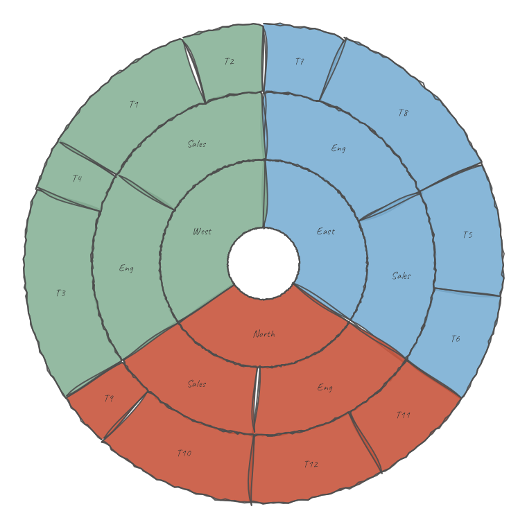
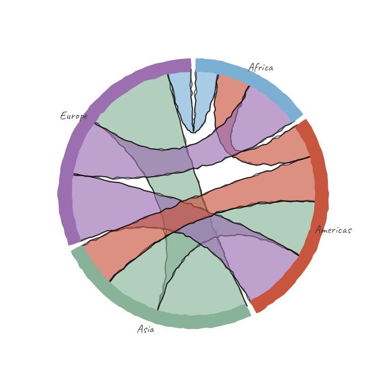
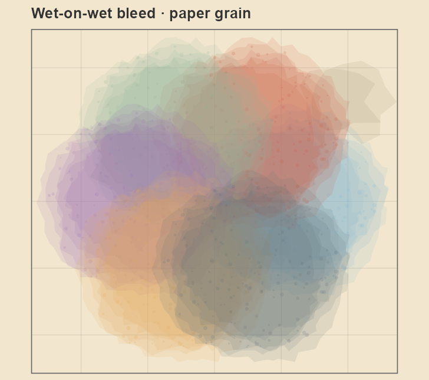

Grammar-native, hand-drawn geoms for ggplot2 - the rough.js sketch aesthetic in pure R, with no JavaScript and no browser.

ggsketch gives you ggplot2 geoms (geom_sketch_col(), geom_sketch_line(), geom_sketch_point(), …) that render with a wobbly, hand-drawn look: roughened double-stroke outlines and hachure / cross-hatch / zigzag / dots / dashed fills. It even shades by tonal engraving — continuous tone built from hatch-line density, the way an etcher or banknote engraver works (geom_sketch_engrave()), something the fill-pattern packages can’t do because they tile a motif rather than compute tone. Because the geoms are real grid grobs wrapped in ggproto, they compose with aes(), stats, scales, facets, and coords, and draw correctly on every R graphics device — screen, PNG, PDF, and SVG.
Why another sketch package?
| ggsketch | ggrough | |
|---|---|---|
| Approach | Native ggplot2 geoms (grid grobs) | Post-hoc convert a finished plot to SVG, redraw in HTML Canvas |
| Output | Any device: screen / PNG / PDF / SVG | HTML widget only (breaks static PDF/PNG) |
Composes with aes() / stats / scales / facets |
Yes | No (operates on the rendered plot) |
| JavaScript / browser | None | Requires rough.js in a browser |
| Status | Active | Maintainer marks it dormant (“doesn’t work with recent releases of ggplot2”) |
The ggrough maintainer himself notes that “a nice way to create sketchy visualisations would be a neat addition to the {ggplot2} ecosystem.” ggsketch fills that gap with native geoms.
Installation
install.packages("ggsketch")Development version from GitHub:
# install.packages("pak")
pak::pak("orijitghosh/ggsketch")ggsketch is pure R (NeedsCompilation: no); its only hard dependencies are ggplot2, grid, rlang, scales, cli, and withr.
Full documentation and a gallery of every geom: https://orijitghosh.github.io/ggsketch/.
Quick start
library(ggplot2)
library(ggsketch)
df <- data.frame(product = c("Alpha","Bravo","Charlie","Delta"),
units = c(34, 51, 22, 47))
ggplot(df, aes(product, units)) +
geom_sketch_col(fill = "#7BAFD4", seed = 1L) +
labs(title = "Units sold") +
theme_sketch()Every randomized routine is seeded, so a given seed always produces the same wobble — your plots are reproducible. Set a session-wide default with options(ggsketch.seed = 1L).
Showcase
Discrete fills map straight through aes(fill = …), and any geom accepts a stat - roughened columns coloured by a Brewer palette, and an Old Faithful histogram:


Points, a marginal rug, and a hand-drawn linear fit compose like any other layers; geom_sketch_bracket() adds significance brackets for pairwise comparisons:


Every fill style works on every filled geom - here fill_style = "hachure" boxplots across vehicle classes:

The 2.0 line adds whole chart families that compose with + — here a hierarchy as a hand-drawn sunburst, and weighted flows as a chord diagram:


It also simulates the medium, not just the line. The "watercolor" fill paints translucent washes that bleed wet-on-wet where regions overlap — mingling into new colours — and feather along the paper tooth set by theme_sketch(paper = ):

The geoms
Shared sketch parameters
| Parameter | Meaning |
|---|---|
roughness |
How far points are jittered (0 = ruler-straight, ~1 default, >3 loose) |
bowing |
How much segments bow outward |
n_passes |
Overlaid strokes (2 = the classic “double stroke”) |
seed |
Integer for reproducible wobble |
fill_style |
"hachure", "cross_hatch", "zigzag", "zigzag_line", "scribble", "dots", "dashed", "stipple", "pencil_shade", "solid", "watercolor"
|
hachure_angle, hachure_gap, fill_weight
|
Fill line angle, spacing, and weight |
How it works
Three layers, kept strictly separate:
-
Layer 1 — pure geometry (
R/core-*.R): numbers → numbers. Seeded roughening, ellipse/Bézier sampling, and an Active-Edge-Table scan-line hachure filler that handles concave polygons. No grid, no ggplot2. -
Layer 2 — grid grobs (
R/grob-*.R):makeContent()converts to device inches and re-roughens at the real render size, so resizing re-draws cleanly. -
Layer 3 — ggproto geoms (
R/geom-*.R): standard ggplot2 extension API.
Roughening always happens in inch space, so the look is consistent across aspect ratios and devices.
Credits & non-affiliation
The algorithms are reimplemented in original R from the published descriptions of the rough.js algorithms (Preet Shihn, 2020) and the hachure approach of Wood et al. No rough.js source is vendored, copied, or translated, and no JavaScript ships in this package. See inst/NOTICE.
ggsketch is an independent R package reimplementing the hand-drawn sketch aesthetic from first principles. It is not affiliated with, derived from, or endorsed by the rough.js project, ggrough, or any related JavaScript libraries.
rough.js is © Preet Shihn and licensed MIT. ggsketch is licensed MIT.